Abbildung ähnlich – zeigt den Produkttyp.
Möbel
Taschenfederkernmatratze 90 x 200 cm (7-Zonen)
Zonierte Taschenfederkernmatratze mit Schaum-Komfortschicht, teils als Rollmatratze im Karton.
Zonierte Taschenfederkernmatratze mit Schaum-Komfortschicht, teils als Rollmatratze im Karton.
Technische Daten
| Ausführung | Taschenfederkernmatratze 90 x 200 cm (7-Zonen) |
|---|---|
| Zolltarifnummer (HS) | 94042910 |
EU-Normen und Vorschriften
EN 1957Betten und Matratzen – PrüfverfahrenEN 597-1/-2Entzündbarkeit von MatratzenGPSR(EU) 2023/988 Produktsicherheit
Weitere Produkte dieser Kategorie
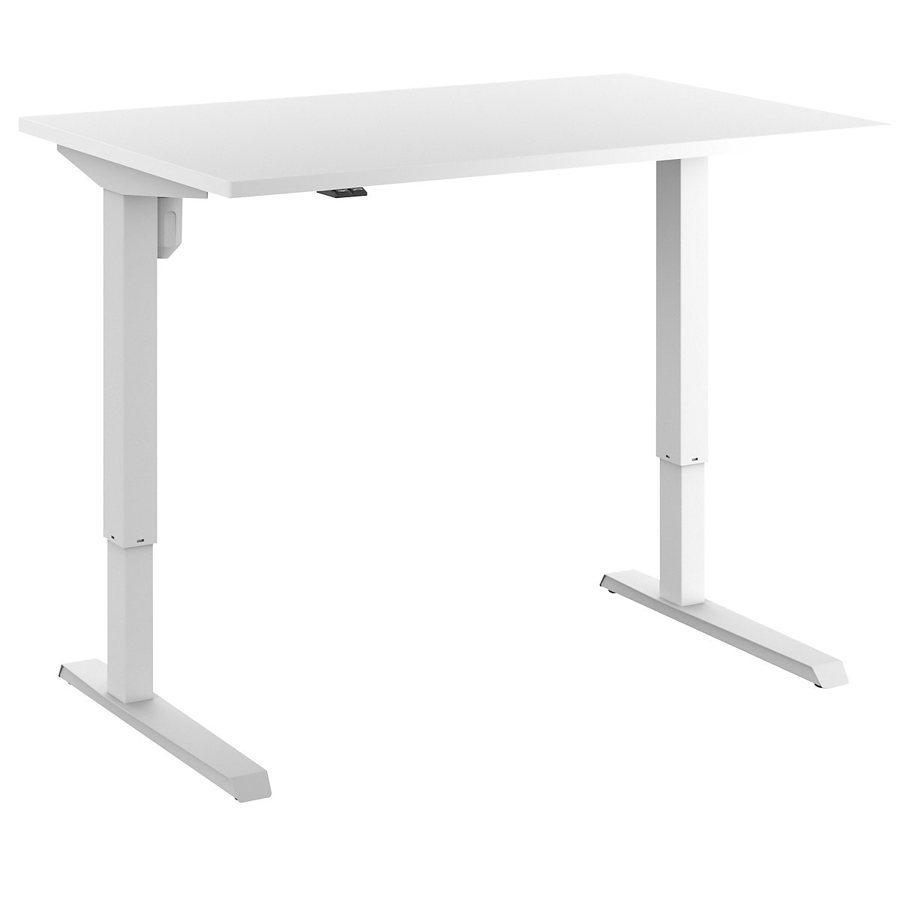
Elektrisch höhenverstellbarer Schreibtisch 160x80 cmElektrisch höhenverstellbarer Sitz-Steh-Schreibtisch mit Doppelmotor und Speichertasten für Büro und Containerbüro.
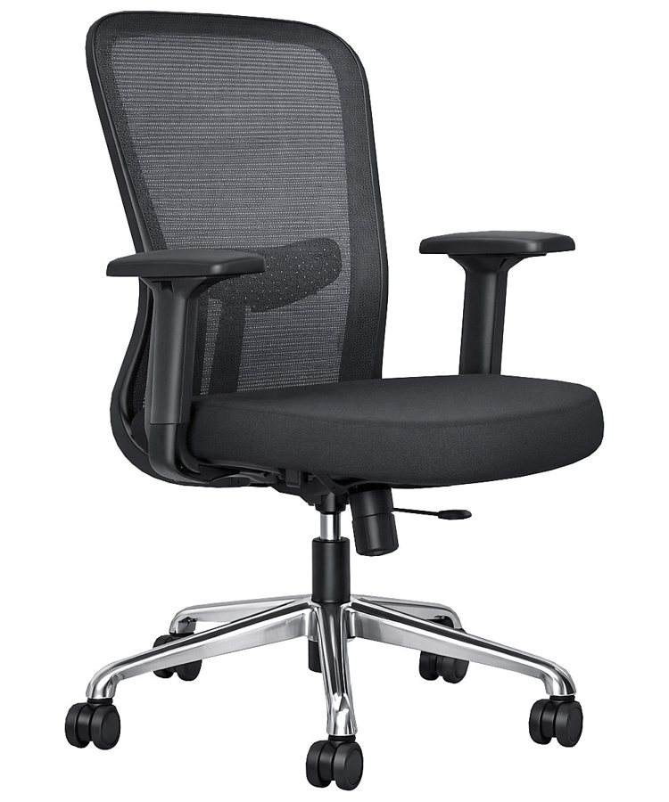
Ergonomischer Bürostuhl (Mesh, Drehstuhl mit Höhenverstellung)

Aktenschrank Stahl mit Schubladen, abschließbarAbschließbarer Stahl-Aktenschrank mit vier Schubladen und Kippschutz für Bauakten und Pläne in Büro und Baucontainer.
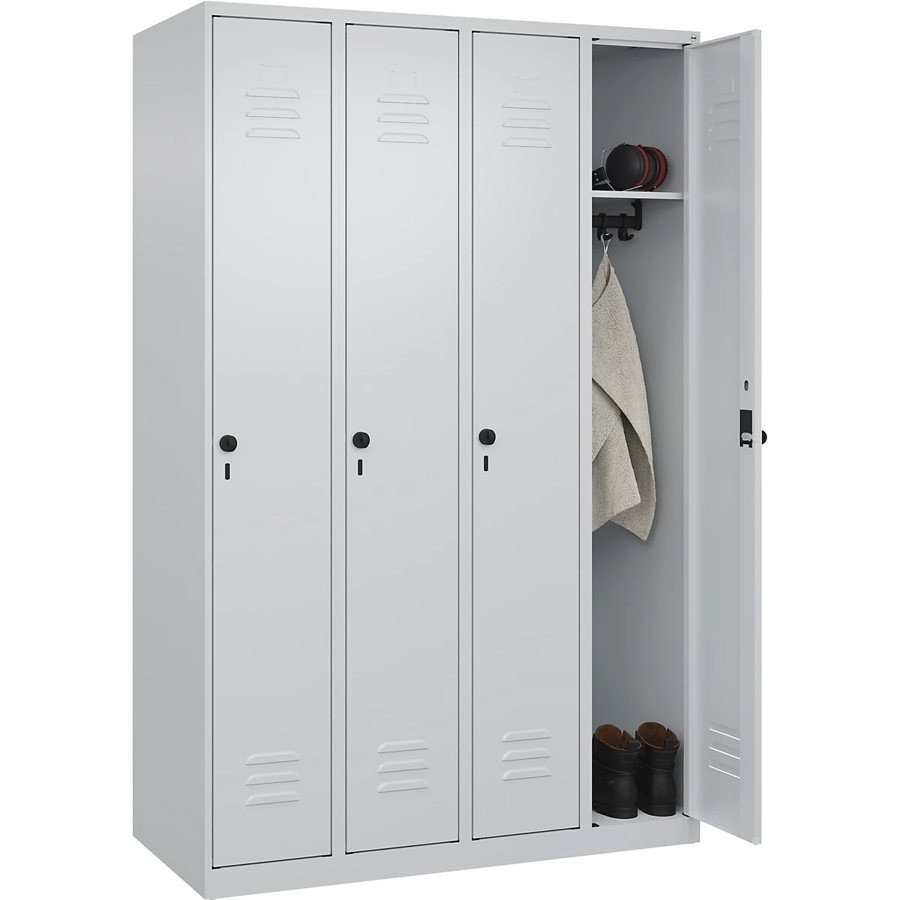
Stahlspind / Garderobenschrank, abschließbarAbschließbarer Stahlspind mit belüfteten Türen für die getrennte Aufbewahrung von Arbeits- und Privatkleidung in Umkleide- und Pausencontainern.

Schwerlastregal (Steckregal, Stahl)Werkzeuglos montierbares Steckregal aus Stahl mit hoher Fachlast für Lager, Werkstatt und Baucontainer.

Klapptisch Kunststoff (HDPE) 180 cmWetterfester Koffer-Klapptisch mit blasgeformter HDPE-Platte und Stahlrohrgestell für Pausenräume und Besprechungen im Baucontainer.
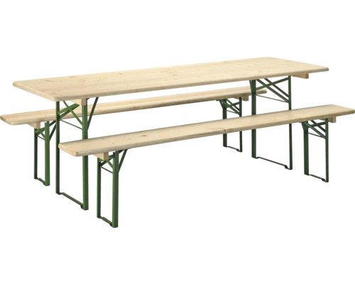
Baucontainer-Einrichtung: Klapptisch 220 cm mit 2 Bänken (3-teilig)Dreiteilige Klapp-Garnitur aus Tisch (220 cm) und zwei Bänken in Holz und Stahl für Pausen- und Besprechungsbereiche im Baucontainer.

Monitorarm mit Gasdruckfeder, Tischklemme (17–32 Zoll, bis 9 kg, VESA 75/100)Schlanker Aluminium-Monitorarm mit Gasdruckfeder für Bildschirme von 17 bis 32 Zoll, per Tischklemme oder Durchführung montierbar.
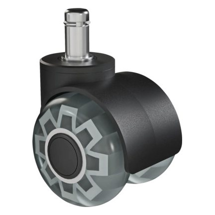
Bürostuhlrollen für Hartboden, 5er-Set (Ø 50–60 mm, Stift 11 mm, wahlweise gebremst oder leise)
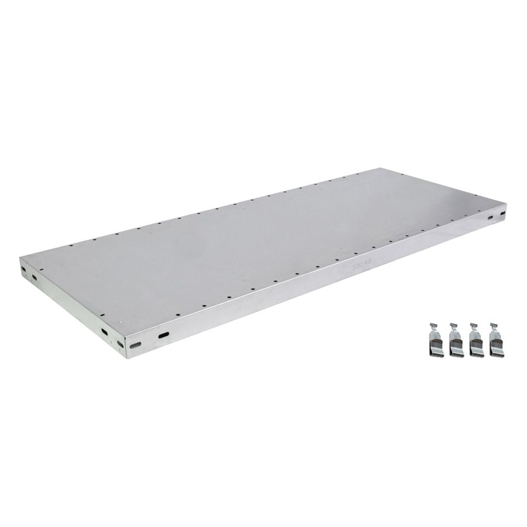
Zusatz- und Ersatzfachboden für Steckregal, Stahl verzinkt (150 und 330 kg, inkl. Fachbodenträger)Verzinkter Stahl-Fachboden mit Fachbodenträgern als Ergänzung oder Ersatz für Steckregale; nur sinnvoll bei exakt passendem Raster.
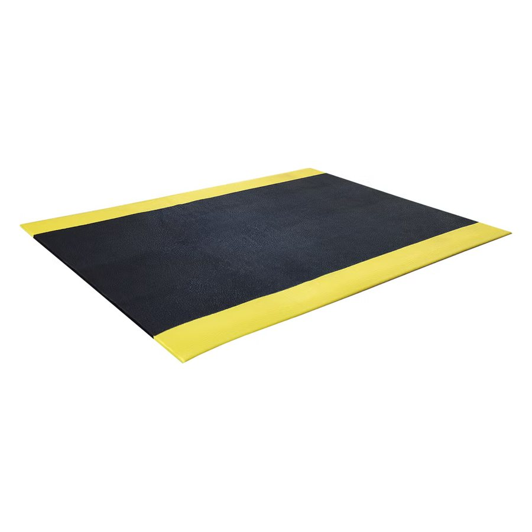
Anti-Ermüdungsmatte für den Stehschreibtisch (PU-/PVC-Schaum, rutschfest, ca. 100 x 50 bis 150 x 90 cm)Elastische Schaumstoffmatte für längeres Stehen am Arbeitsplatz, rutschfest, abwischbar und in mehreren Größen und Stärken.

Ladenbau-Regal / Gondelregal aus StahlModulares Stahlregal für Laden und Supermarkt als Wand- oder Mittelraumregal mit verstellbaren Fachböden.

Vinylboden SPC, Klick (Rigid Core, 4 mm, Nutzschicht 0,3 mm)Wasserfestes Klick-Vinyl mit mineralischem SPC-Kern in Holzoptik, schwimmend verlegbar, für Wohn- und Gewerbeflächen.
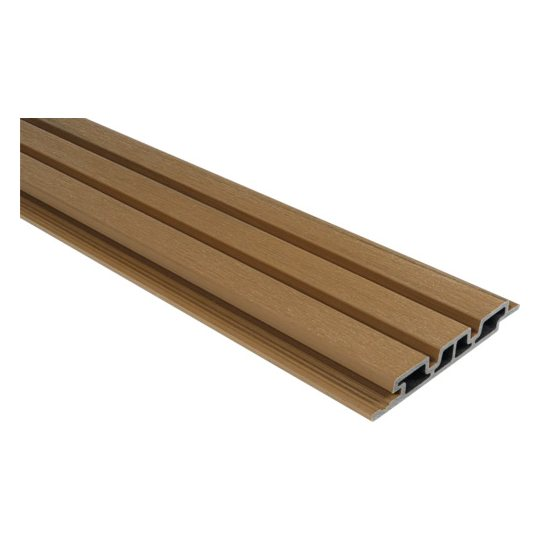
Fassadenpaneel aus WPC (Holz-Kunststoff-Verbund, Profil 173 × 21 mm)Pflegeleichte Fassadenverkleidung aus Holz-Kunststoff-Verbund als Profilbrett für hinterlüftete Außenwände.

LED-Panel 62 × 62 cm für Büro (UGR < 19, Backlit, 40 W)Blendarme Rasterleuchte im Format 595 × 595 mm für Büro-Rasterdecken, Backlit-LED mit Aluminiumrahmen.
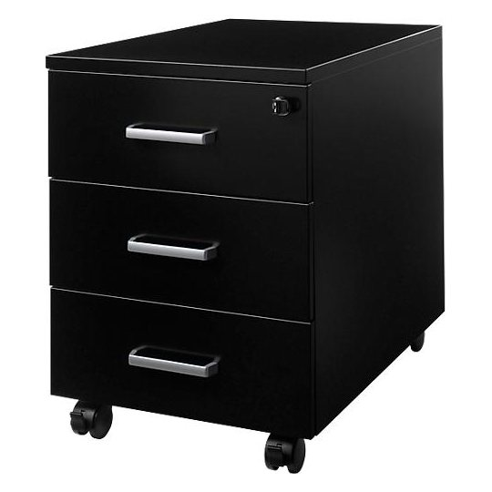
Rollcontainer Büro, Stahl, 3 Schubladen, abschließbarAbschließbarer Stahl-Rollcontainer mit drei Schubladen für Akten und Arbeitsmaterial unter dem Schreibtisch.
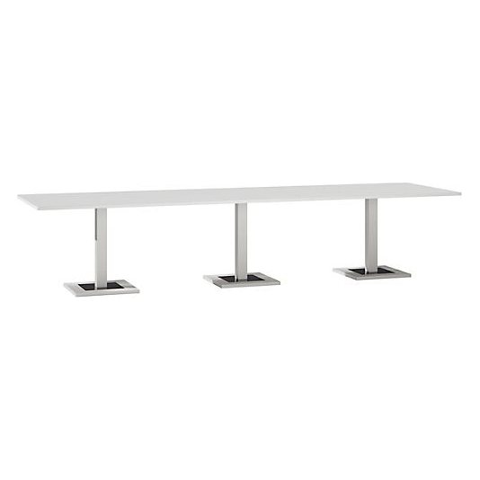
Konferenztisch 8–10 Personen (320 × 150 cm)
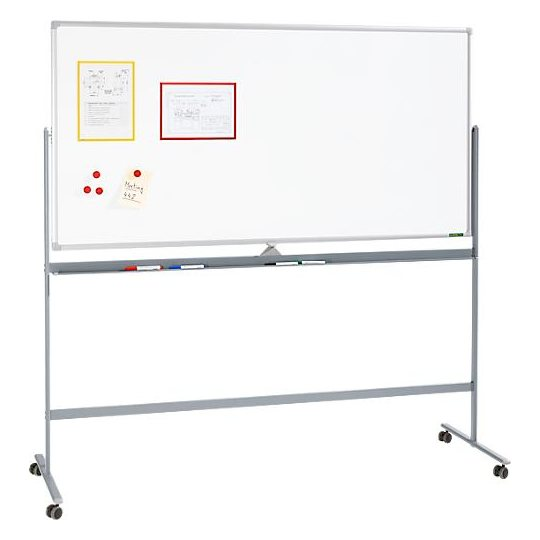
Mobiles Whiteboard 180 × 90 cm, doppelseitig, magnetischFahrbares, doppelseitiges Magnet-Whiteboard 180 × 90 cm mit Aluminiumrahmen, Stiftablage und Rollen für Besprechung und Workshop.
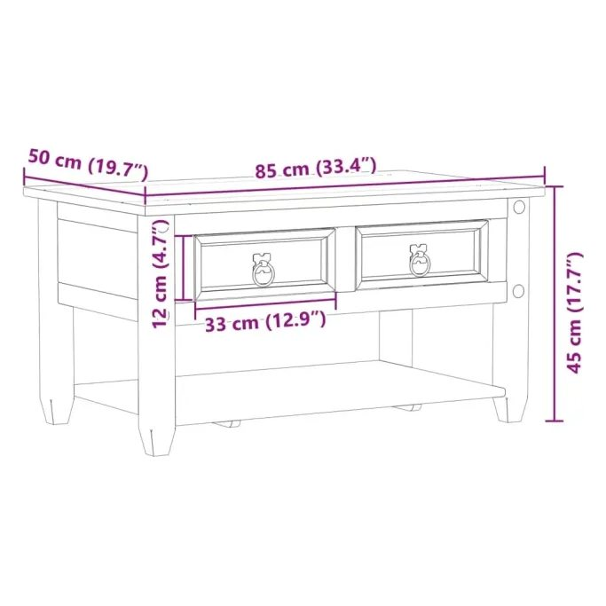
Couchtisch (Holz/Metall, ca. 80–100 cm)Couchtisch für das Wohnzimmer, Tischplatte aus Holzwerkstoff, Gestell Metall oder Holz.

Schuhschrank / Schuhregal mit Ablage (Holzwerkstoff)Schuhschrank aus Holzwerkstoff mit Fächern für den Flur.

Garten-Essgruppe, Aluminium/Rope (Tisch + 4 Stühle)Garten-Essgruppe mit Aluminiumgestell in Rope-/Rattan-Optik, wetterfest.

Stapelstuhl Aluminium für Gastronomie/BankettStapelbarer Aluminiumstuhl für Gastronomie, Hotel und Veranstaltungen.

Waschtischunterschrank mit KeramikbeckenBadezimmerschrank mit Waschbecken aus feuchtraumgeeignetem Material.
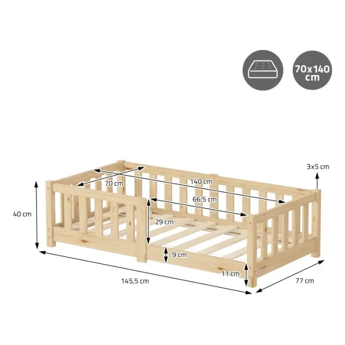
Babybett / Kinderbett aus Holz (70 x 140 cm)Holz-Kinderbett mit höhenverstellbarem Boden und Gitterstäben.
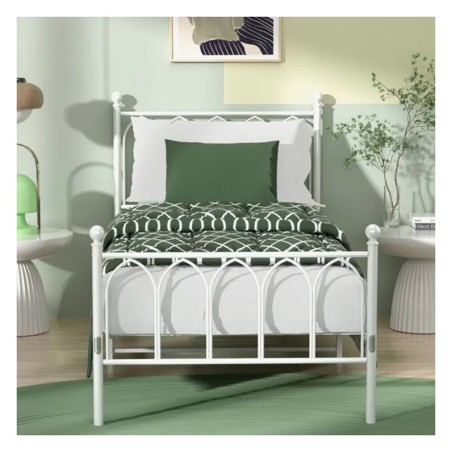
Metallbett 90 x 200 cm mit LattenrostEinzelbett mit Stahlrahmen und Latten, pulverbeschichtet.